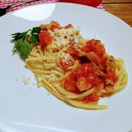

Receta: Pasta con Salsa de Tomate
Ingredientes:
- 200 g de pasta ( Macarrones )
- 2 tomates maduros
- 1 diente de ajo
- 2 cucharadas de aceite de oliva
- Sal
- Perejil fresco para decorar
Instrucciones:
- Cuece la pasta en agua hirviendo con sal según las instrucciones del paquete.
- Mientras tanto, pela y pica el ajo finamente.
- En una sartén, calienta el aceite de oliva y sofríe el ajo hasta que esté dorado.
- Tritura los tomates y agrégalos a la sartén. Cocina durante 10 minutos a fuego medio.
- Escurre la pasta y mézclala con la salsa de tomate.
- Sirve en un plato y decora con perejil fresco picado.
Imagen:

Consejo:
Añade queso rallado encima para darle un bon gusto